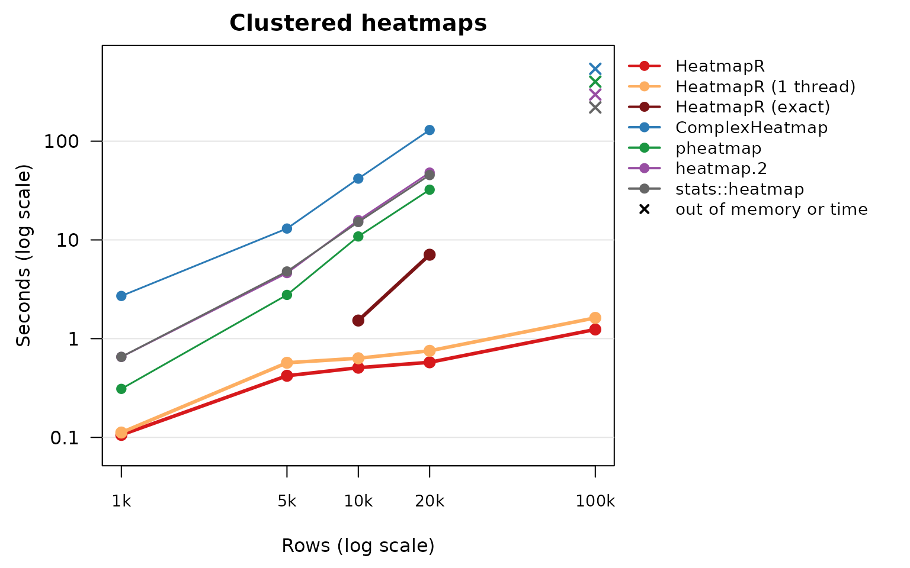
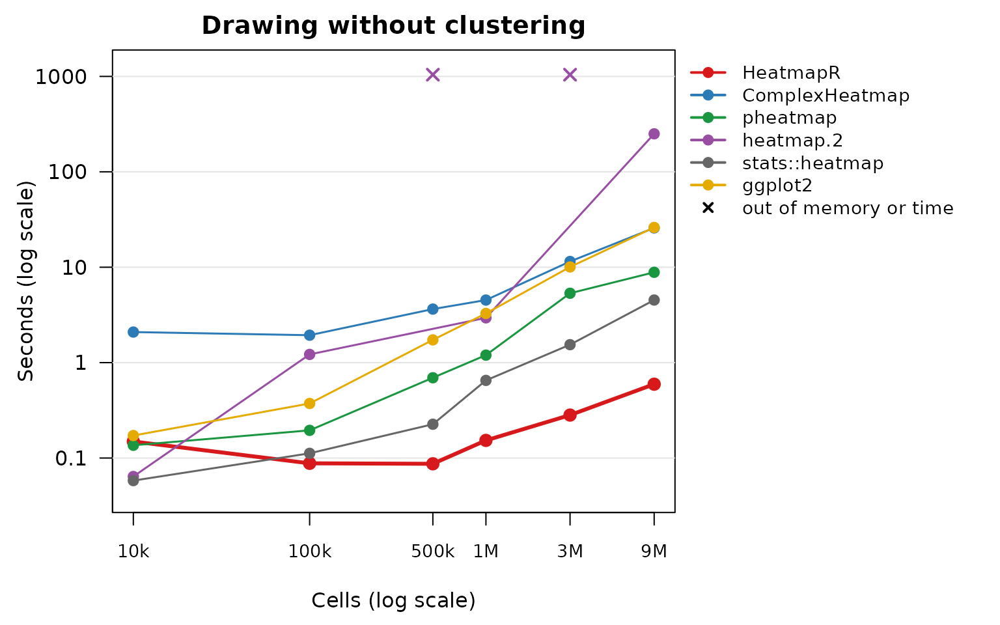
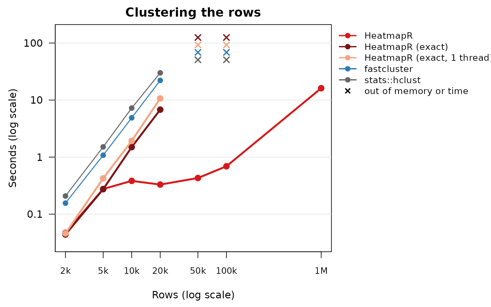

How long does a heatmap take? For a few hundred rows any package will do, but single-cell data, cytometry events and expression matrices have tens of thousands to millions of rows, and that is where heatmap packages part ways. This article measures the time and memory HeatmapR and five other ways of drawing heatmaps in R need, from 10,000 to 9 million cells, with and without clustering, and the clustering and leaf ordering behind them.
Summary
- Clustered heatmaps. Clustering rows and columns exactly, as every package does by default, HeatmapR was 7 times faster than the fastest of the others (pheatmap) and 31 times faster than ComplexHeatmap on 5,000 rows of 50 columns, and 69 to 74 times faster on a 3,000 x 3,000 matrix (3.7 seconds rather than 4.1 minutes or more). On 20,000 rows the others took 32 to 130 seconds; HeatmapR 7.1 seconds clustering exactly, or 0.6 with its default two-stage clustering, which also clustered 100,000 rows in 1.2 seconds, where every other package ran out of memory.
-
Drawing. Without clustering, HeatmapR drew 100,000
x 30 cells in 0.28 seconds and 9 million cells in 0.59, 8 times faster
than the fastest of the others (
stats::heatmap()) and 43 times faster than ComplexHeatmap and ggplot2. For a small heatmap (100 x 100) every package but ComplexHeatmap takes less than a fifth of a second, andstats::heatmap()andheatmap.2()are the quickest. -
Clustering alone. HeatmapR’s exact clustering
builds the same trees as
stats::hclust()and was 4.4 times faster than it and 3.3 times faster than fastcluster on 20,000 rows (2.8 and 2.1 times on one core), with half the memory. Two-stage clustering handled a million rows in 16 seconds and 538 MB. - Optimal leaf ordering. HeatmapR clustered and optimally ordered 4,000 rows in 0.43 seconds, 74 times faster than the seriation package.
- Memory. To cluster and draw 20,000 rows HeatmapR needed 1,549 MB clustering exactly and 114 MB in two stages; the others needed 3,256 to 4,747 MB.
How the comparison was run
Each package was called as it usually is, with its defaults wherever they don’t change what is drawn:
| Method | Call |
|---|---|
| HeatmapR 2.0.0 | heat_map(x, tree = "both") |
| ComplexHeatmap 2.18.0 | draw(Heatmap(x)) |
| pheatmap 1.0.12 | pheatmap(x) |
| gplots 3.1.3.1 | heatmap.2(x, trace = "none") |
| stats (R 4.3.3) | heatmap(x, scale = "none") |
| ggplot2 3.4.4 |
ggplot(df, aes(col, row, fill = value)) + geom_raster()
(no clustering) |
- Data. Normal noise around five blocks of rows and five blocks of columns, so that clustering finds structure, with row and column names. Names were drawn for up to 200 rows or columns and turned off beyond that in every package.
-
Clustering. Rows and columns were clustered with
complete linkage of Euclidean distances, the default of every package,
or not at all (“drawing only”). HeatmapR clusters more than
clust_max = 5000rows in two stages (a sample of 5,000 rows clustered exactly, every other row placed beneath its nearest group; see Large heatmaps); “HeatmapR (exact)” setsclust_max = Infand clusters every row exactly, as the other packages do. - Timing. Each run drew one heatmap to a 7 x 7 inch, 150 dpi PNG file, in a fresh R process after drawing a small heatmap to load the package and the device. The time includes opening the device, clustering, drawing and writing the file. Each case ran three times (once when a run took more than 30 seconds) and the median is shown; runs were stopped after 10 minutes.
- Memory. The growth of the process’s resident memory from just before the run to its peak, which includes memory used by compiled code.
- Machine. Intel(R) Xeon(R) Processor @ 2.10GHz, 2 cores, 7.8 GB of memory, R version 4.3.3 (2024-02-29), 2026-11-10. HeatmapR used both cores; “HeatmapR (1 thread)” used one. The other packages use one core.
Clustered heatmaps
Rows and columns clustered, dendrograms drawn. Times in seconds; HeatmapR clusters up to 5,000 rows exactly by default, so “HeatmapR (exact)” is only shown for larger data:
| HeatmapR | HeatmapR (1 thread) | HeatmapR (exact) | ComplexHeatmap | pheatmap | heatmap.2 | stats::heatmap | |
|---|---|---|---|---|---|---|---|
| 100 x 100 | 0.13 | 0.12 | 1.8 | 0.12 | 0.14 | 0.13 | |
| 1,000 x 100 | 0.11 | 0.11 | 2.7 | 0.31 | 0.65 | 0.65 | |
| 5,000 x 50 | 0.42 | 0.57 | 13 | 2.8 | 4.6 | 4.8 | |
| 10,000 x 50 | 0.51 | 0.63 | 1.5 | 42 | 11 | 16 | 15 |
| 20,000 x 30 | 0.58 | 0.75 | 7.1 | 130 | 32 | 48 | 45 |
| 1,000 x 1,000 | 0.28 | 0.34 | 8.4 | 3.1 | 3.5 | 3.5 | |
| 100,000 x 30 | 1.2 | 1.6 | out of memory | out of memory | out of memory | out of memory | |
| 3,000 x 3,000 | 3.7 | 6.2 | 275 | 254 | 253 | 249 |
The chart shows the tall matrices (30 to 100 columns) against their number of rows, which is what the time of clustering depends on:

The time of the other packages is dominated by clustering: R’s
dist() and hclust() compute and store every
distance between rows, so their time grows with the square of the number
of rows (and the cube for hclust() in the worst case) and
their memory with its square. 20,000 rows need 1.6 GB of distances
before any copies, and 100,000 rows 40 GB, which only HeatmapR’s
two-stage clustering could cluster here. HeatmapR computes distances in
compiled code with SIMD instructions, builds the tree by the
nearest-neighbour chain algorithm (the same tree as
hclust()), and above clust_max rows clusters
in two stages, so its memory grows with the number of rows rather than
its square.
Peak memory in MB:
| HeatmapR | HeatmapR (1 thread) | HeatmapR (exact) | ComplexHeatmap | pheatmap | heatmap.2 | stats::heatmap | |
|---|---|---|---|---|---|---|---|
| 100 x 100 | 3 | 3 | 17 | 6 | 10 | 9 | |
| 1,000 x 100 | 17 | 17 | 43 | 53 | 31 | 21 | |
| 5,000 x 50 | 107 | 107 | 279 | 346 | 370 | 268 | |
| 10,000 x 50 | 111 | 111 | 397 | 884 | 1,231 | 1,338 | 958 |
| 20,000 x 30 | 114 | 113 | 1,549 | 3,732 | 4,677 | 4,747 | 3,256 |
| 1,000 x 1,000 | 35 | 34 | 215 | 82 | 89 | 44 | |
| 100,000 x 30 | 187 | 187 | out of memory | out of memory | out of memory | out of memory | |
| 3,000 x 3,000 | 378 | 378 | 1,643 | 584 | 743 | 391 |
Drawing only
No clustering, the rows and columns in the order of the data. Times in seconds:
| HeatmapR | ComplexHeatmap | pheatmap | heatmap.2 | stats::heatmap | ggplot2 | |
|---|---|---|---|---|---|---|
| 100 x 100 | 0.15 | 2.1 | 0.14 | 0.06 | 0.06 | 0.17 |
| 1,000 x 100 | 0.09 | 1.9 | 0.20 | 1.2 | 0.11 | 0.37 |
| 10,000 x 50 | 0.09 | 3.6 | 0.69 | timeout | 0.23 | 1.7 |
| 1,000 x 1,000 | 0.15 | 4.5 | 1.2 | 2.9 | 0.65 | 3.3 |
| 100,000 x 30 | 0.28 | 11 | 5.3 | out of memory | 1.5 | 10 |
| 3,000 x 3,000 | 0.59 | 26 | 8.8 | 250 | 4.5 | 26 |

HeatmapR draws heatmaps of more than 50,000 cells as one raster image
whose colours are worked out in compiled code, and only the text,
dendrograms and legend as vector graphics. pheatmap draws one rectangle
per cell, so its time and memory grow with the number of cells.
ComplexHeatmap rasterises large heatmaps too, but its layout and drawing
take a second or more at any size. heatmap.2() without a
row dendrogram builds a dummy one from the distances between the rows of
an identity matrix with one row per row of the data, which takes more
than 10 minutes for 10,000 rows and doesn’t fit in memory for
100,000.
Peak memory in MB:
| HeatmapR | ComplexHeatmap | pheatmap | heatmap.2 | stats::heatmap | ggplot2 | |
|---|---|---|---|---|---|---|
| 100 x 100 | 3 | 24 | 3 | 0 | 4 | 20 |
| 1,000 x 100 | 18 | 72 | 28 | 31 | 7 | 54 |
| 10,000 x 50 | 42 | 217 | 70 | timeout | 33 | 169 |
| 1,000 x 1,000 | 27 | 212 | 59 | 75 | 42 | 298 |
| 100,000 x 30 | 92 | 751 | 230 | out of memory | 103 | 890 |
| 3,000 x 3,000 | 309 | 1,485 | 585 | 626 | 309 | 2,434 |
Clustering on its own
The rows of a matrix with 30 columns clustered by complete linkage,
without drawing: stats::hclust(dist(x)),
fastcluster::hclust(dist(x)) (fastcluster 1.2.6), and
heat_map_clust(x), exactly (max = Inf) or in
two stages above 5,000 rows (the default). Times in seconds:
| HeatmapR | HeatmapR (exact) | HeatmapR (exact, 1 thread) | fastcluster | stats::hclust | |
|---|---|---|---|---|---|
| 2,000 x 30 | 0.05 | 0.04 | 0.05 | 0.16 | 0.21 |
| 5,000 x 30 | 0.28 | 0.27 | 0.42 | 1.1 | 1.5 |
| 10,000 x 30 | 0.38 | 1.5 | 1.9 | 4.9 | 7.2 |
| 20,000 x 30 | 0.33 | 6.8 | 11 | 22 | 30 |
| 50,000 x 30 | 0.43 | out of memory | out of memory | out of memory | out of memory |
| 100,000 x 30 | 0.69 | out of memory | out of memory | out of memory | out of memory |
| 1,000,000 x 30 | 16 |

Peak memory in MB:
| HeatmapR | HeatmapR (exact) | HeatmapR (exact, 1 thread) | fastcluster | stats::hclust | |
|---|---|---|---|---|---|
| 2,000 x 30 | 15 | 15 | 15 | 30 | 30 |
| 5,000 x 30 | 95 | 95 | 95 | 191 | 191 |
| 10,000 x 30 | 95 | 382 | 381 | 763 | 763 |
| 20,000 x 30 | 95 | 1,526 | 1,526 | 3,052 | 3,052 |
| 50,000 x 30 | 95 | out of memory | out of memory | out of memory | out of memory |
| 100,000 x 30 | 96 | out of memory | out of memory | out of memory | out of memory |
| 1,000,000 x 30 | 538 |
HeatmapR’s exact clustering computes the distances in blocks that
stay in the cache, four at a time with SIMD instructions and on all
cores, keeps them in one matrix without the copies that
hclust() makes, and merges clusters by the
nearest-neighbour chain algorithm, which needs O(n^2) time for complete,
average, McQuitty and Ward linkage (single linkage is built from a
minimum spanning tree, centroid and median linkage by
hclust()’s own algorithm). When distances are distinct the
tree is the one hclust() returns.
Optimal leaf ordering
Clustering and optimal leaf ordering of the rows (complete linkage,
Euclidean distances): seriation::seriate(dist(x), "OLO")
(seriation 1.5.4) and heat_map_clust(x, order = "olo").
Times in seconds:
| HeatmapR (exact) | HeatmapR (exact, 1 thread) | seriation | |
|---|---|---|---|
| 500 x 30 | 0.01 | 0.01 | 0.07 |
| 1,000 x 30 | 0.03 | 0.03 | 0.30 |
| 2,000 x 30 | 0.11 | 0.14 | 3.4 |
| 4,000 x 30 | 0.43 | 0.64 | 32 |
Both find the exact optimal leaf order (Bar-Joseph, Gifford and Jaakkola, 2001), whose worst case is a cube of the number of rows. HeatmapR computes its min-plus products in cache-sized blocks with SIMD instructions and skips the steps that bounds show can’t improve the order.
Caveats
- Versions. The other packages are the versions in Ubuntu 24.04 (listed above), which may be older than those on CRAN and Bioconductor.
-
Features. The packages don’t draw the same things:
ComplexHeatmap and pheatmap draw more legends and annotations by
default, and offer features HeatmapR doesn’t (and the other way round).
The times are those of drawing comparable heatmaps with each package’s
defaults, not of the packages’ best possible use: ComplexHeatmap and
pheatmap, for example, accept precomputed dendrograms, which could come
from
heat_map_clust(). - Approximation. HeatmapR’s default two-stage clustering above 5,000 rows is not exact clustering, though its clusters agree closely with exact ones on data with structure (see Large heatmaps). “HeatmapR (exact)” is the like-for-like comparison.
- Cores. HeatmapR shares its larger jobs between cores; the “1 thread” rows show it on one core.
Reproducing the benchmark
The scripts are in data-raw/benchmarks:
case.R runs one case in its own process and
run.R runs them all and writes
vignettes/articles/benchmarks.csv, which this page reads.
Run on an otherwise idle machine:
References
Bar-Joseph, Z., Gifford, D. K. and Jaakkola, T. S. (2001). Fast optimal leaf ordering for hierarchical clustering. Bioinformatics, 17(suppl 1), S22-S29. doi:10.1093/bioinformatics/17.suppl_1.S22